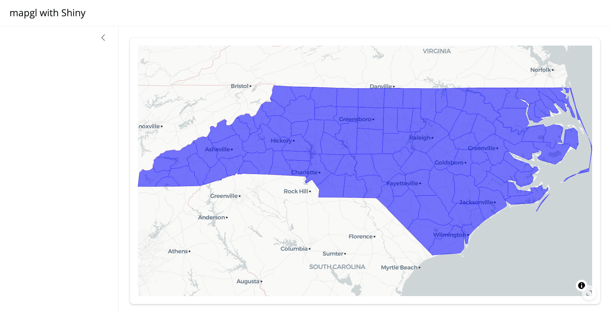
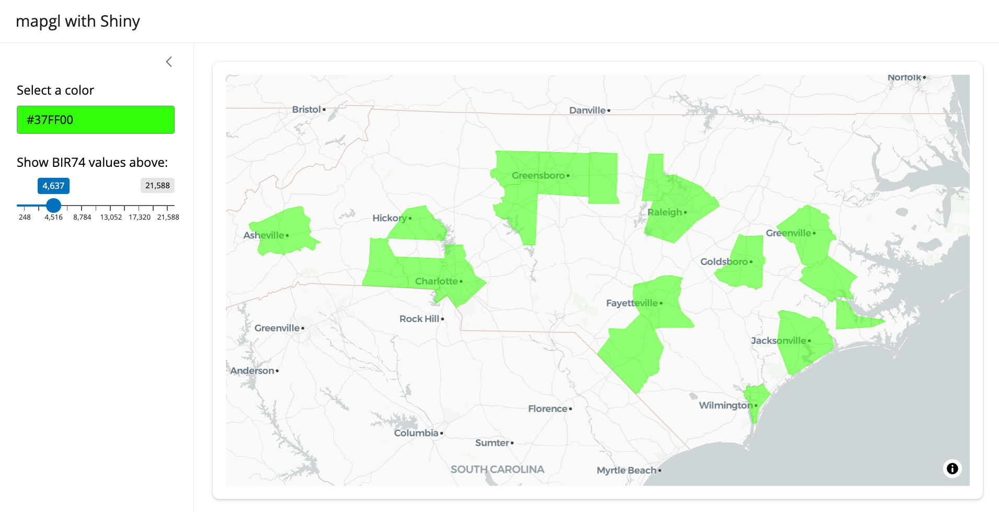

Using mapgl with Shiny
shiny.RmdMy main motivation for writing mapgl was to be able to use the latest versions of Mapbox GL JS and MapLibre in my Shiny apps. mapgl is designed to work well with Shiny, and aims to connect the interactive features of the JavaScript libraries with Shiny’s reactive programming framework. The overall goal here is to help you design Mapbox / MapLibre apps that approach pure JavaScript-level performance but are written in R.
Let’s step through a simple app using the North Carolina dataset that comes with the sf package. We’ll initialize a basic app with a sidebar using the bslib package that does nothing more than display North Carolina’s counties over a basemap.
library(shiny)
library(bslib)
library(mapgl)
library(sf)
nc <- st_read(system.file("shape/nc.shp", package="sf"))
ui <- page_sidebar(
title = "mapgl with Shiny",
sidebar = sidebar(),
card(
full_screen = TRUE,
maplibreOutput("map")
)
)
server <- function(input, output, session) {
output$map <- renderMaplibre({
maplibre(style = carto_style("positron")) |>
fit_bounds(nc, animate = FALSE) |>
add_fill_layer(id = "nc_data",
source = nc,
fill_color = "blue",
fill_opacity = 0.5)
})
}
shinyApp(ui, server)
Note that we use maplibreOutput() to display the map in
the UI and renderMaplibre() to render it in the server
code; the equivalent functions for Mapbox maps are
mapboxglOutput() and renderMapboxgl().
Map inputs
A number of map events are built-in when working with mapgl in a Shiny session and exposed to the user as inputs. These include:
input$MAPID_center: The center coordinates of the map (named as
lngandlat);input$MAPID_zoom: The current zoom level of the map;
input$MAPID_bbox: The bounding box of the visible extent of the map, named as
xmin,xmax,ymin, andymax.input$MAPID_click: The longitude and latitude of the click, named as
lngandlat, and a timestamp for the click, named astime.
Visible features on the map can also be queried when clicked.
Clicking the map in Shiny returns input$MAPID_feature_click,
which gets you the layer ID, all of the column values for the clicked
feature (accessible in properties), as well as the
coordinates and time of the click.
Try this example to see how this works:
ui <- page_sidebar(
title = "mapgl with Shiny",
sidebar = sidebar(
verbatimTextOutput("clicked_feature")
),
card(
full_screen = TRUE,
maplibreOutput("map")
)
)
server <- function(input, output, session) {
output$map <- renderMaplibre({
maplibre(style = carto_style("positron")) |>
fit_bounds(nc, animate = FALSE) |>
add_fill_layer(id = "nc_data",
source = nc,
fill_color = "blue",
fill_opacity = 0.5)
})
output$clicked_feature <- renderPrint({
req(input$map_feature_click)
input$map_feature_click
})
}
shinyApp(ui, server)
Shiny-specific functions
mapgl includes a number of functions to help you interact with your maps and data in a Shiny session, and will likely add more in the future. These include:
set_style(), which will modify the underlying style (basemap) of the map;set_layout_property(), which will modify a layout property of the map (such as whether or not a layer is displayed);set_paint_property(), which will modify the styling of a layer;set_filter(), which dynamically filters the displayed data in a layer based on an input value. You’ll need to build a filter expressionto achieve this; usinglist()in R will translate to square brackets in JavaScript. I have plans to make this easier for users in the future.
You’ll use these functions in combination with a proxy
object, which will be familiar to users coming from Leaflet or other R
mapping packages. The map proxy preserves the existing state of the map,
and allows you to edit components of it without re-drawing the entire
map in the app. You’ll use mapboxgl_proxy() for Mapbox
maps, and maplibre_proxy() for MapLibre maps.
Try out this example which uses a color picker widget to change the color on the map, and a slider to filter the visible counties based on an expression.
library(colourpicker)
ui <- page_sidebar(
title = "mapgl with Shiny",
sidebar = sidebar(
colourInput("color", "Select a color",
value = "blue"),
sliderInput("slider", "Show BIR74 values above:",
value = 248, min = 248, max = 21588)
),
card(
full_screen = TRUE,
maplibreOutput("map")
)
)
server <- function(input, output, session) {
output$map <- renderMaplibre({
maplibre(style = carto_style("positron")) |>
fit_bounds(nc, animate = FALSE) |>
add_fill_layer(id = "nc_data",
source = nc,
fill_color = "blue",
fill_opacity = 0.5)
})
observeEvent(input$color, {
maplibre_proxy("map") |>
set_paint_property("nc_data", "fill-color", input$color)
})
observeEvent(input$slider, {
maplibre_proxy("map") |>
set_filter("nc_data",
list(">=", get_column("BIR74"), input$slider))
})
}
shinyApp(ui, server)